No Ar
R$39,90/mês
R$ 1,33 por dia
- Ouvintes
- até 100 ao mesmo tempo
- Som
- bom (96 kbps)
- Músicas
- 10 GB, cerca de 2.500
1 rádio
Assinar o No ArVocê escolhe o nome. A rádio já nasce tocando, com site, bate-papo, programas prontos e um jeito de entrar ao vivo pelo navegador. Travou alguma coisa no seu computador? O suporte acessa e resolve com você.
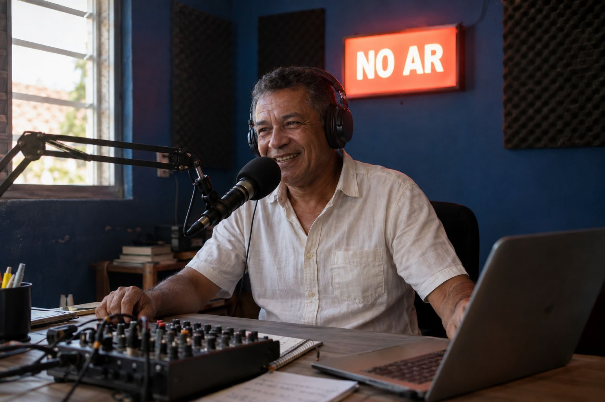
A Zunocast foi feita pra tirar essas pedras do caminho.
O nome aparece no site, no player e no endereço da rádio.
No cartão, os meses seguintes são cobrados sozinhos. No Pix, o link de pagamento chega no seu e-mail antes do vencimento. Ninguém precisa mandar comprovante.
Com site e bate-papo prontos. O acesso ao painel chega no seu e-mail.
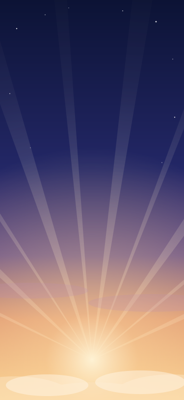
Rádio Som do Céu
Manhã de Louvor
Exemplos de rádio. A sua toca o que você quiser.
Ele já vem pronto, num endereço como suaradio.zunofm.com. Você troca a logo, as fotos e os textos pelo editor, sem programar, e o site fica com a cara da sua rádio.
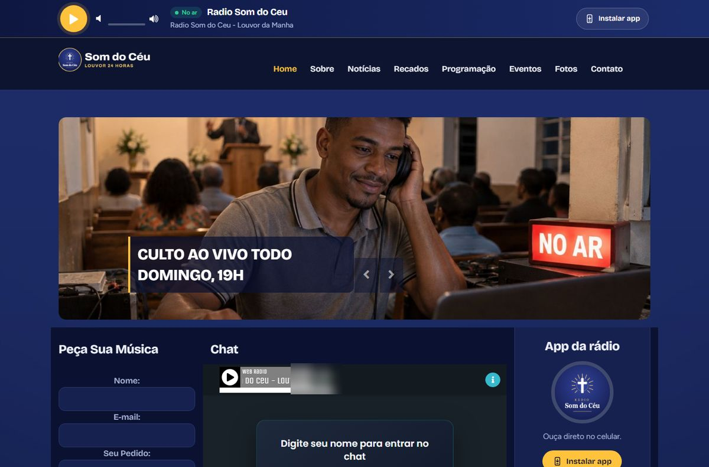
GospelRádio Som do CéuAbrir o site de exemplo
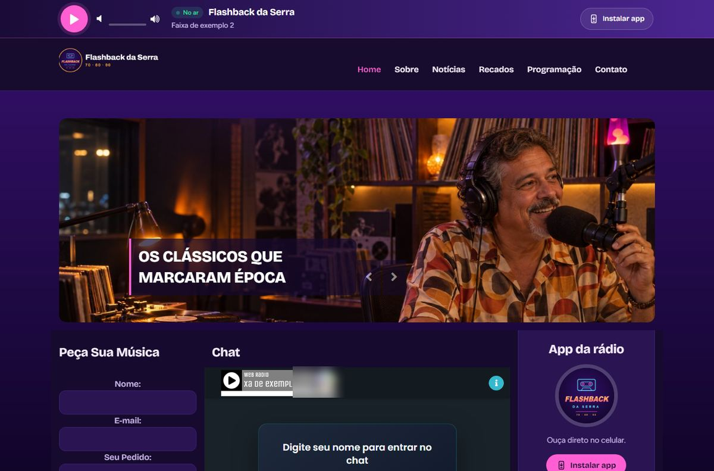
FlashbackFlashback da SerraAbrir o site de exemplo
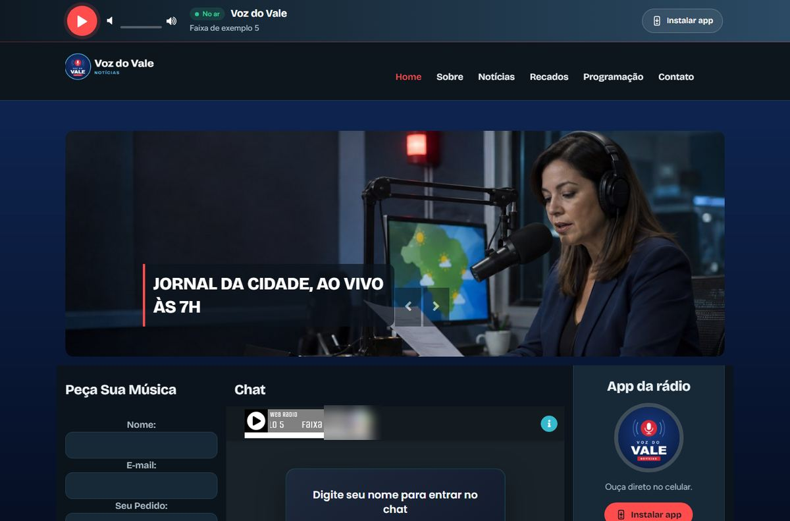
NotíciasVoz do ValeAbrir o site de exemplo
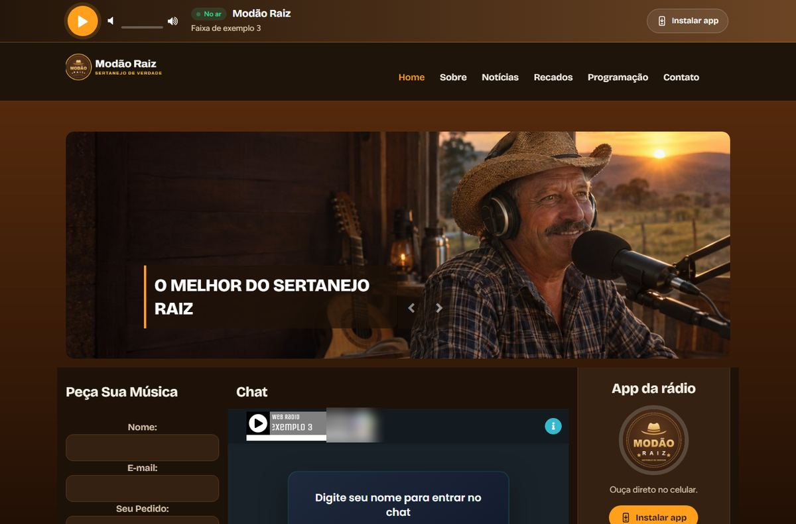
SertanejoModão RaizAbrir o site de exemplo
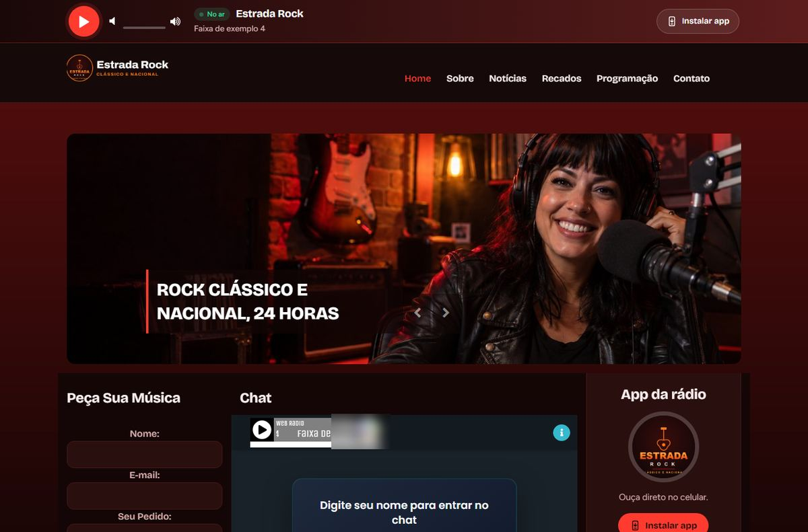
RockEstrada RockAbrir o site de exemplo
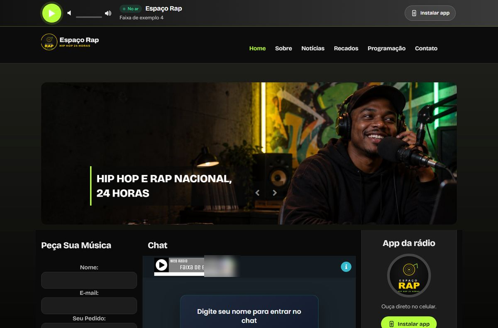
Rap e hip hopEspaço RapAbrir o site de exemplo
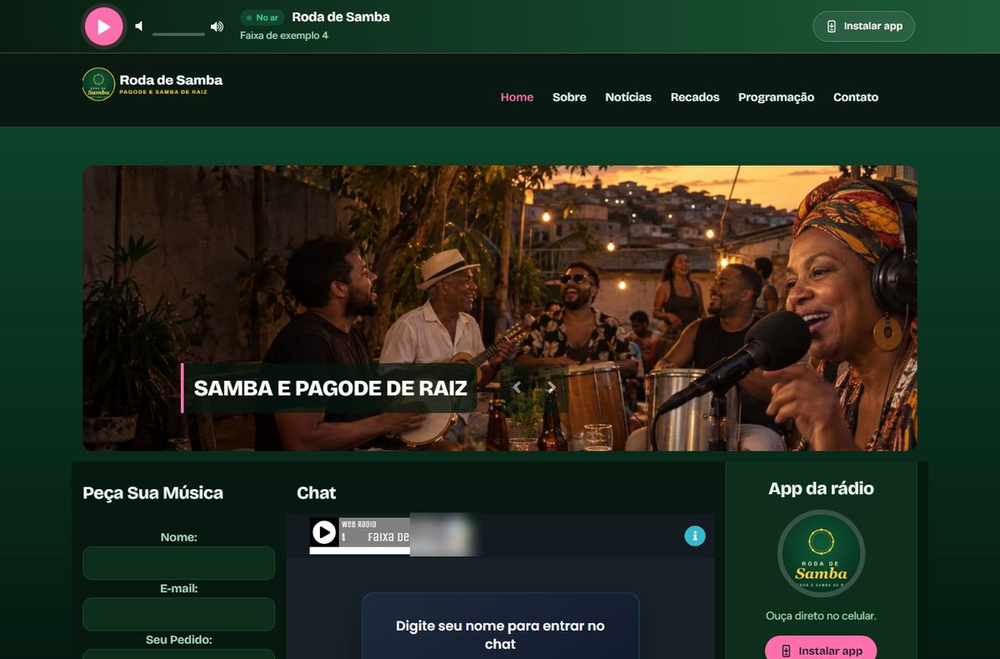
Samba e pagodeRoda de SambaAbrir o site de exemplo
Exemplos montados por nós no modelo que vem com todos os planos: cada rádio com a sua logo, as suas cores e as suas fotos.
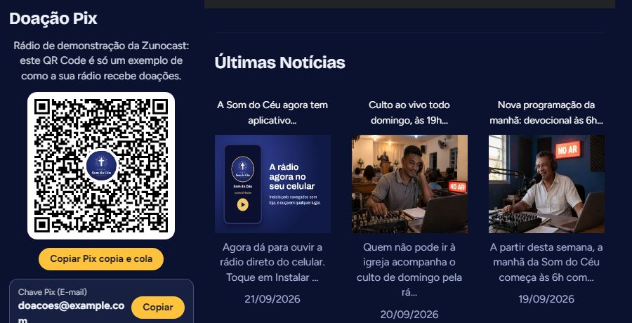
O ouvinte aponta a câmera e doa. A oferta cai direto na conta do ministério, sem intermediário e sem taxa da Zunocast.
Venda espaço para a padaria, a farmácia e o mercadinho da cidade. É um jeito de a rádio ajudar a pagar a própria mensalidade.
Devocional de manhã, notícias no café, previsão do tempo, dica de saúde, piada da hora. É isso que faz o ouvinte ficar, e você não precisa gravar nada: toda madrugada os episódios novos chegam sozinhos na sua rádio.
Em todos os planos, inclusive no No Ar. Travou pra montar? O suporte te mostra no painel.
Grade de hoje
O painel abre pela sua área do cliente, sem decorar porta nem senha. Um clique liga a rádio, as músicas ficam em pastas e você vê quantas pessoas estão ouvindo agora.
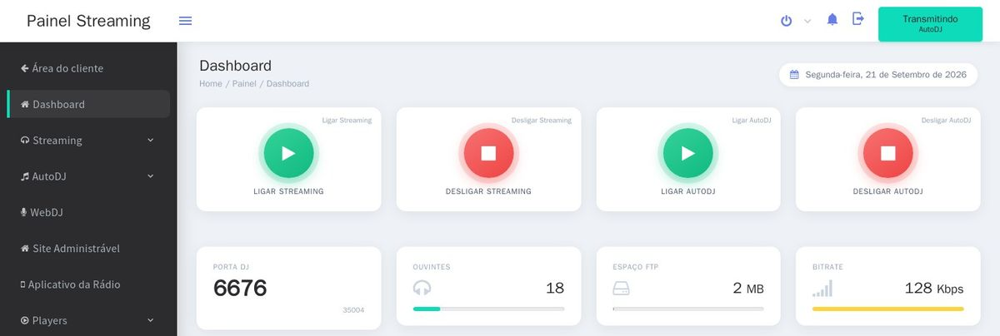
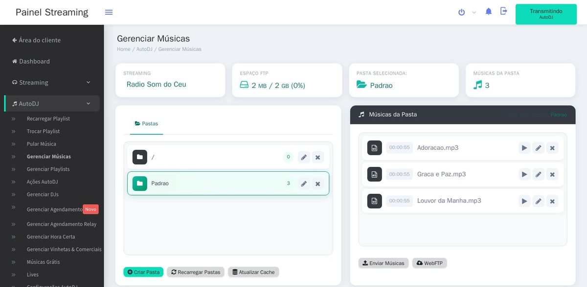
Telas reais do painel da rádio de exemplo. Travou em alguma coisa? O suporte te mostra onde clicar.
Em muita empresa de rádio, a resposta é que o problema está no seu computador. Aqui, o suporte remoto vem em todos os planos: instala e configura o programa de transmissão, o microfone e a mesa de som, com você acompanhando.
Passe este código no chat de atendimento
482 913 507
O suporte só entra depois que você autorizar.
Autorizo o acesso
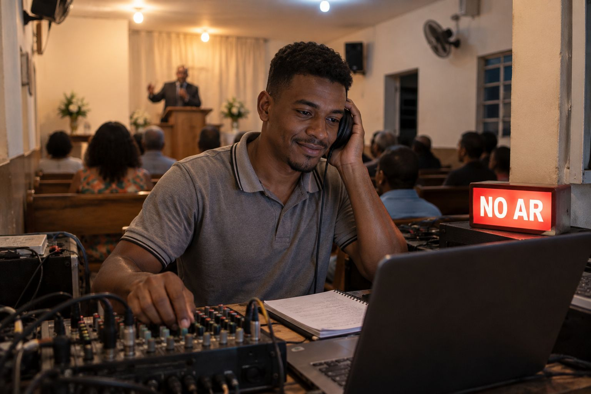
Deixe o louvor tocando 24 horas, com devocional e versículo do dia entre as músicas, entre ao vivo no culto pelo navegador e receba os pedidos de oração no bate-papo do site. O site e o aplicativo levam o nome do seu ministério.
Volte ao ar com a sua voz e o seu horário. Quando você não está no microfone, a programação continua, com programas e programetes entre as músicas.
Notícias, previsão do tempo, esporte, flashback, sertanejo, forró. Um endereço e um bate-papo pra juntar quem gosta do mesmo que você.
Preço por mês. Sem fidelidade e sem taxa de instalação. Cada canal da mesa é um plano.
R$39,90/mês
R$ 1,33 por dia
1 rádio
Assinar o No ArRecomendado
R$69,90/mês
R$ 2,33 por dia
1 rádio
Assinar o EstúdioR$139,90/mês
R$ 4,66 por dia
2 rádios e prioridade no suporte
Assinar o Emissora*Ouvintes ilimitados dentro do uso justo. Para proteger a qualidade de todas as rádios, o servidor tem um limite de segurança de 1.000 pessoas ao mesmo tempo por rádio. Se a sua passar disso, a gente conversa com você.
Não. A rádio já nasce pronta e tocando. Pra entrar ao vivo, você usa o navegador. Se precisar configurar microfone, mesa ou programa de transmissão, o suporte remoto faz com você.
Não. A programação automática roda no nosso servidor, dia e noite. O computador só precisa estar ligado quando você quiser entrar ao vivo.
Não. Estão em todos os planos, inclusive no No Ar. São mais de 140, entre programas mais longos e programetes de poucos minutos: evangélicos, católicos, de notícias, esporte, música, humor, saúde e curiosidades.
Não. Toda madrugada os episódios novos chegam sozinhos ao servidor e entram no lugar dos antigos. Você só escolhe, uma vez, quais programas quer na sua programação.
No Pix ou no cartão. No cartão, a mensalidade é cobrada sozinha todo mês. No Pix, antes de cada vencimento chega no seu e-mail o link para pagar, e a confirmação é automática. Ninguém precisa mandar comprovante.
Assim que o pagamento é confirmado. No Pix e no cartão, isso costuma levar poucos minutos. O acesso chega no seu e-mail.
Pode, pela sua área do cliente. Não tem multa nem fidelidade. A rádio continua no ar até o fim do período que você já pagou.
Pode. Subir de plano vale na hora. Descer vale a partir da próxima renovação.
Pode. Cada rádio tem o seu plano, e todas aparecem juntas na sua área do cliente. O plano Emissora já vem com duas.
O acesso só começa quando você passa o código e autoriza na sua tela, e acaba quando você fecha o programa. Qualquer ação que apague alguma coisa pede sua confirmação antes.